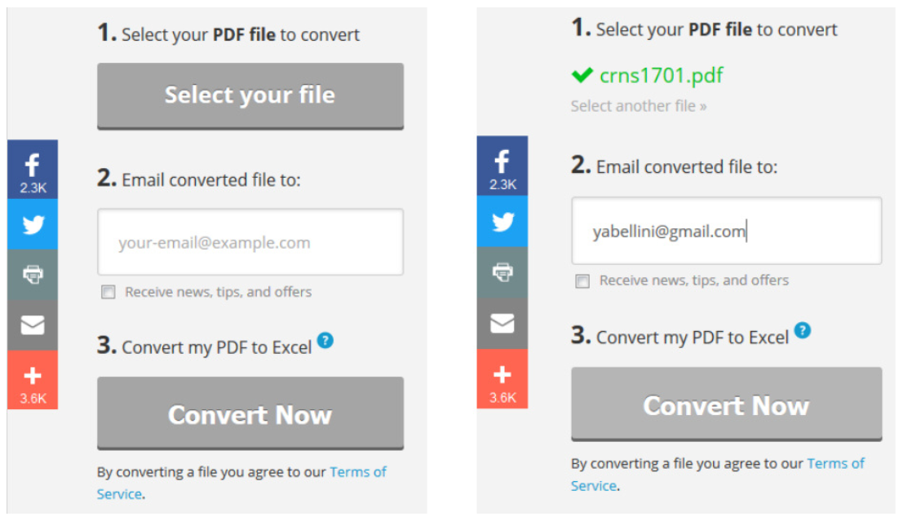
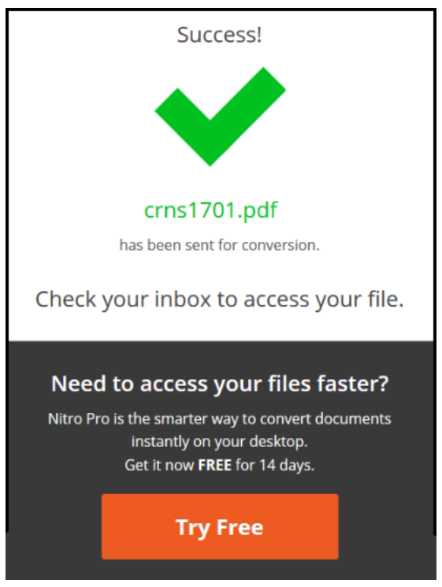
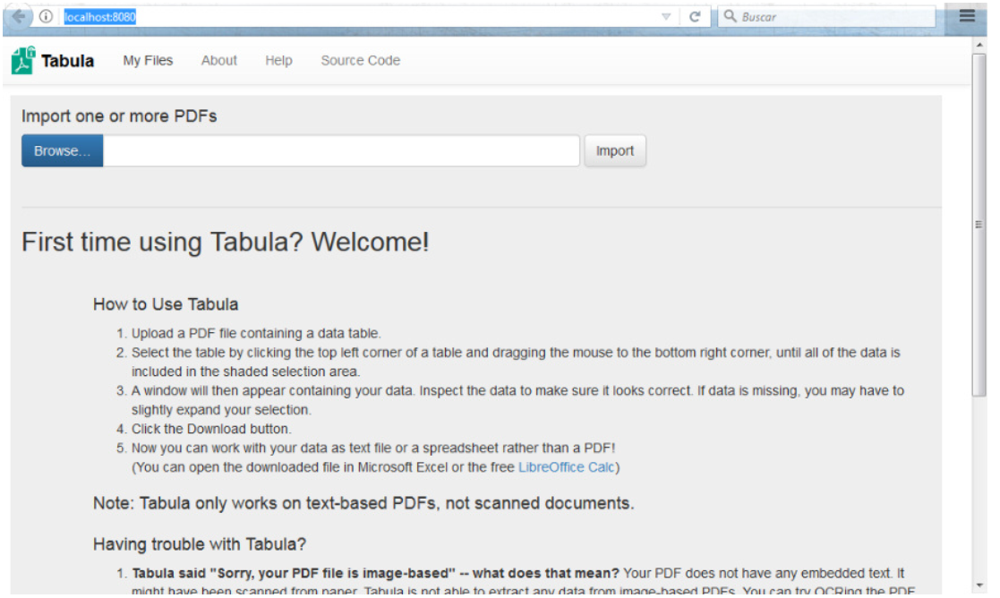
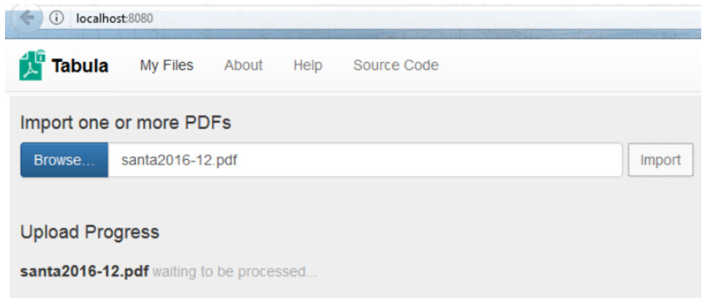
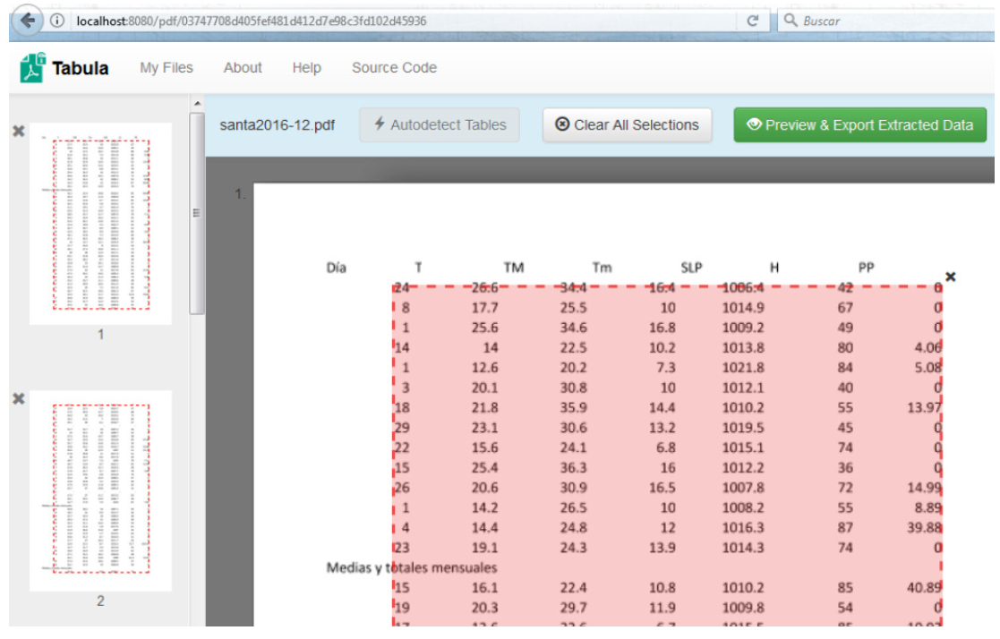
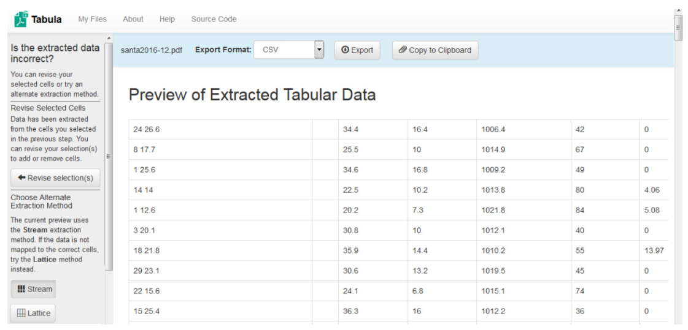
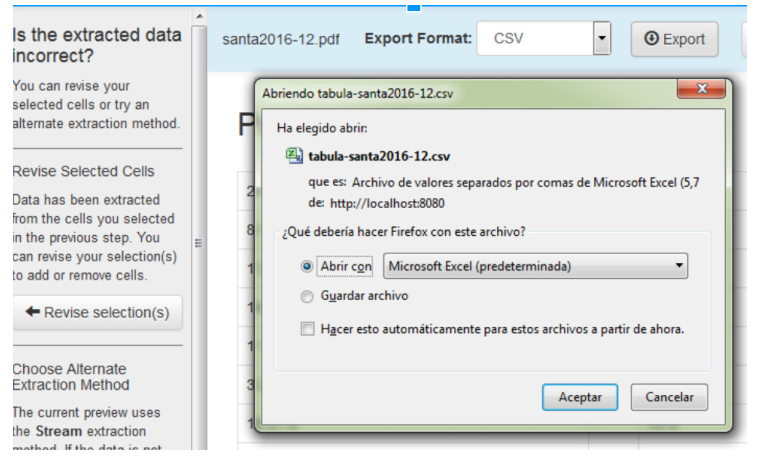

Clase 4 - Metadatos y Limpieza de datos
Objetivos de Aprendizaje
Definir que es un metadato y Explicar que funcion cumplen.
Definir el ciclo de degradacion normal de la informacion.
Definir scrapping.
Describir 5 aspectos a tener en cuenta con datos propios y 5 con datos ajenos para poder realizar un proceso de limpieza de datos reproducible.
Utilizar Open Refine para limpiar un conjunto de datos.
Determinar que tipo de tarea se puede realizar con OpenRefine para limpiar diferentes problemas con datos.
Recuperar datos desde formatos cerrados como los PDF y JPG y almacenarlos en un formato abierto.
Utilizar Tabula para obtener datos desde archivos PDF.
Slides
Ejercicios
1) Obteniendo datos desde un PDF on-line
Duración: ~12 minutos
Existen varios software que realizan conversiones de archivos, algunos de ellos funcionan on-line lo que evita tener que instalar el sistema en la propia computadora.
Dentro de este grupo tenemos PDFToExcel.
Transformar los datos de dos archivos PDF con tablas a un formato CSV legible.
Descargamos los dos archivos PDF que se encuentran en el campus (crns1701.pdf y santa2016-12.pdf).
Para utilizar el aplicativo entramos en https://www.pdftoexcelonline.com/
La pantalla de inicio nos presenta un paso a paso, donde lo primero es seleccionar el archivo a convertir. Presionando el botón Select your file y seleccionamos el archivo crns1701.pdf, luego completamos con el mail al cual deseamos que nos envíe el archivo y finalmente presionamos el botón Convert Now

Nos aparece un cartel como el siguiente donde nos indica que nos enviarán el archivo convertido por mail:

- Entrando al mail que indicamos encontraremos un correo con un link para descargar el archivo convertido, lo guardamos y abrimos para analizar la transformación.
2) Obteniendo datos desde un PDF off-line
Duración: ~20 minutos
También existen software que se instalan en la computadora, uno de ellos es Tabula. Para utilizarlo:
Si aún no lo hicieron, descarguen el archivo zip desde el sitio http://tabula.technology/, lo descomprimimos y luego vamos a la carpeta que acaba de extraer.
Dentro de la misma se encuentran una serie de archivos, ejecuta (haciendo doble click o presionando Enter) el programa “Tabula” que se encuentra dentro. Se abrirá un navegador web. Si no lo hace, abra su navegador web y vaya a http://localhost: 8080. Aparecerá una pantalla similar a la siguiente.

- Para iniciar la conversión, presionamos el botón Browse, luego elegimos el archivo santa2016-12.pdf y presionamos el botón Import. Inicia la conversión del archivo PDF.

- Cuando termina nos presenta una pantalla para trabajar, si presionamos el botón Autodetec Tables nos marca la sección a transformar y con el botón Preview & Export Extrated Data podemos obtener la información seleccionada.

La pantalla siguiente nos presenta los datos y nos da varias opciones para exportarlos o copiarlos al portapapeles. También podemos volver atrás para cambiar la selección si vemos que lo elegido no corresponde con lo que necesitamos extraer.
- Lo exportamos a un archivo CSV, seleccionamos ese formato en Export Format y presionando en el botón Export.

- Si seleccionamos Guardar y damos Aceptar el archivo se almacenará en nuestro disco. Lo guardamos y abrimos para analizar la transformación.

3) Open Refine. Caso: lectores del Horizonte Agropecuario
Duración: ~45 minutos
- Seguir las instrucciones del ejercicio de limpiza de datos usando Open Refine
Lecturas sugeridas
Artículo - Nongeospatial Metadata for the Ecological Sciences. William et.al. 1997 (inglés)
Artículo - Propuesta para una Infraestructura de Datos Agropecuarios del Instituto Nacional de Tecnología Agropecuaria (INTA) (Español)